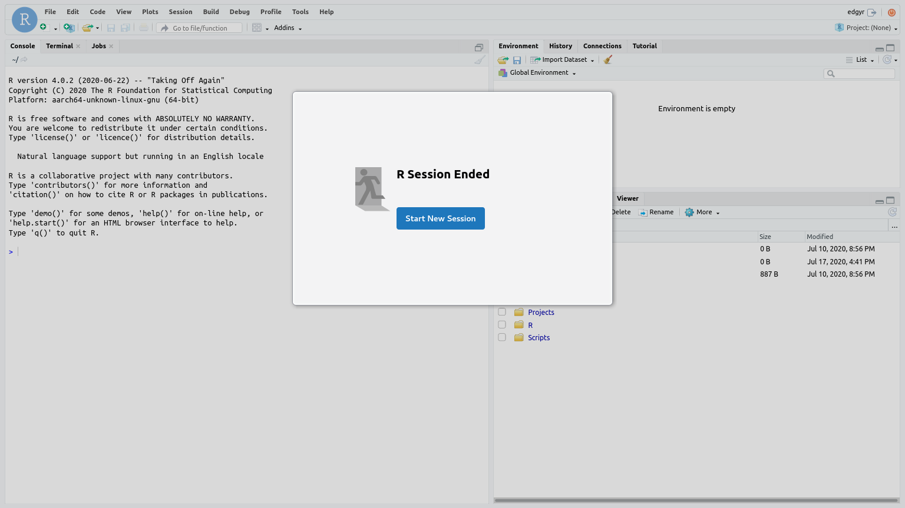
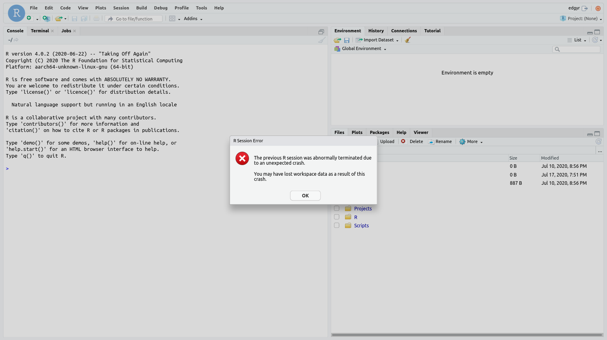
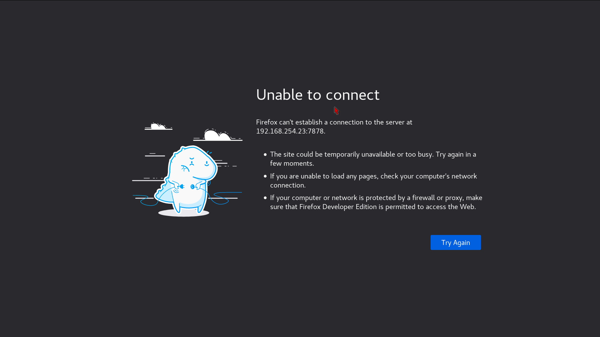

Chapter 7 Operations and Persistence
7.1 Docker operations
The two main user-visible components to a Docker package are an image, which
is a collection of software, and containers, where the software runs. In this
release there is a single image, edgyr-ml, and normally you will only be
running a single container, called edgyr.
In the following, all operations will occur on the Docker host in the directory
~/Projects/edgyr/container-run-scripts. I’m going to assume the host is a
Jetson Nano called “Nano.”
7.1.1 Pulling the image
Before you can use the image, you have to have it on your Docker host. To do
this, run the script pull-image:
znmeb@Nano:~/Projects/edgyR/container-run-scripts$ ./pull-image
latest: Pulling from znmeb/edgyr-ml
3b5e2c02f523: Pulling fs layer
b9448035bb0a: Pulling fs layer
[snip]
464529f5c5bb: Pull complete
248fad5e214b: Pull complete
6de52330cbb9: Pull complete
Digest: sha256:51265581fe03aae8fb6a2cbc28929a56b33229cf5656d04723ad5c9e78a121d0
Status: Downloaded newer image for znmeb/edgyr-ml:latest
docker.io/znmeb/edgyr-ml:latest
REPOSITORY TAG IMAGE ID CREATED SIZE
znmeb/edgyr-ml latest a74882eb113b 19 hours ago 6.84GB
znmeb@Nano:~/Projects/edgyR/container-run-scripts$ 7.1.2 Running the image in a container
Once we’ve pulled the image, we need to create a container with the image and
start the service processes in it, in this case RStudio Server. We do this with
the run-edgyr script:
znmeb@Nano:~/Projects/edgyR/container-run-scripts$ export EDGYR_PASSWORD="12.angry%characters"
znmeb@Nano:~/Projects/edgyR/container-run-scripts$ ./run-edgyr
Force-removing old 'edgyr' container
You can ignore errors if it doesn't exist
Error: No such container: edgyr
Running image znmeb/edgyr-ml:latest
867dcf8179966c9aa4472e8b0d71267106902a3da572b9ebb2e6bce5a3f2231d
CONTAINER ID IMAGE COMMAND CREATED STATUS PORTS NAMES
867dcf817996 znmeb/edgyr-ml:latest "/docker-entrypoint.…" 13 seconds ago Up 5 seconds edgyr
Resetting 'edgyr' password
Starting RStudio Server - browse to port 7878 on Docker host
znmeb@Nano:~/Projects/edgyR/container-run-scripts$ If you forget to define the EDGYR_PASSWORD variable, you’ll get an error
message:
znmeb@Nano:~/Projects/edgyR/container-run-scripts$ ./run-edgyr
You need to specify a new password for the 'edgyr'
account in the 'EDGYR_PASSWORD' environment variable.
The new 'edgyr' password must be at least 12 characters!A Docker container is a collection of Linux processes that are isolated from
the host except for well-defined resource usages and behavior. When you did
./run-edgyr, the following things happened:
- If there was already an
edgyrcontainer, Docker removed it. - Docker created a new container, called
edgyr. - Docker set the filesystem of the container to the contents of the image,
docker.io/znmeb/edgyr-ml. This filesystem is independent of the host filesystem; it’s stored in a protected area that Docker manages. - Docker connected the container’s network to the host network. This means any
ports that the processes in the container uses are bound to the host port with
the same numbers. For this image, that’s port
7878for RStudio Server and port8888if you start up the JupyterLab service. - Docker started the container by running a script in the container called
docker-entrypoint.sh. docker-entrypoint.shread theEDGYR_PASSWORDenvironment variable and set the password for theedgyraccount in the container to that value.
All of this means you can now browse to port 7878 on the host Nano remotely,
or to port 7878 on localhost from the Nano console, and log in to RStudio
Server as edgyr with the password you set.
The host - container relationship is a bit like one-way mirrors. The processes
in the container can only see other processes running in the container, can
only read and write to filesystems we allow, which in this case is the
filesystem we created from the image with ./run-edgyr.
We haven’t restricted the container’s CPU, GPU or RAM usage, but we could have done so. And we have connected the container directly to the host network, but we could have created an isolated virtual network that only the container and other containers we specified could use.
7.1.3 Stopping and restarting the container
Suppose we want to stop the container but keep all the files on its filesystem intact. First, we stop the R session in the container from the RStudio Server browser window:

Press the red button at the top right of the window to stop the R session. You will see this:

You need to do this before stopping the container. If you forget, you may lose data, and you may see this warning when you bring it back up:

After you’ve stopped the session, you can stop the container. There’s a script
for that - stop-edgyr:
znmeb@Nano:~/Projects/edgyR/container-run-scripts$ ./stop-edgyr
Stopping the 'edgyr' container
edgyr
CONTAINER ID IMAGE COMMAND CREATED STATUS PORTS NAMES
867dcf817996 znmeb/edgyr-ml:latest "/docker-entrypoint.…" 3 hours ago Exited (137) 5 seconds ago edgyr
znmeb@Nano:~/Projects/edgyR/container-run-scripts$ Now if you try to log in from a browser you’ll get an error message:

Once you’ve stopped the container, you can shut the host down or restart it and your files will be there when you start everything up again.
To start the container back up again, we start the container, and there’s a
script for that too - start-edgyr:
znmeb@Nano:~/Projects/edgyR/container-run-scripts$ ./start-edgyr
Starting the 'edgyr' container
edgyr
CONTAINER ID IMAGE COMMAND CREATED STATUS PORTS NAMES
867dcf817996 znmeb/edgyr-ml:latest "/docker-entrypoint.…" 3 hours ago Up 5 seconds edgyr
znmeb@Nano:~/Projects/edgyR/container-run-scripts$ Note that there’s a difference between run-edgyr and start-edgyr.
run-edgyr creates a fresh container, loads the image into it, sets up the
networking and then starts the container. start-edgyr only starts a stopped
container that already exists.
7.2 Git and GitHub
The primary goal of the edgyR project is to provide an R / RStudio
package development environment for Jetson development kits. As a result, I
strongly encourage developers to use Git and GitHub for persistence and
collaboration rather than other means. The Nano is especially a one-person
machine; it only has 4 GB of RAM and a small filesystem by current standards.
See (Wickham 2015) for more practical advice on R package development.
The first time you run an edgyr container, edit
/home/edgyr/Scripts/edit-me-then-run-4-git-config.bash. Enter your name and
email address as they appear on your GitHub repositories, and change the
credential caching time if two hours is too long or too short for your
workflow. Then run the script.
To clone a project, go into the Projects directory and use the https form
to specify the repository. The first time you push a commit, RStudio will ask
for your ID and “password.” If you’re using two-factor authentication as
GitHub recommends, the password is your personal access token (PAT). Git will
cache those credentials for the time you specified - two hours if you use the
default in the script.
7.3 Next: Using JupyterLab
vignette("kk-jupyter-lab")